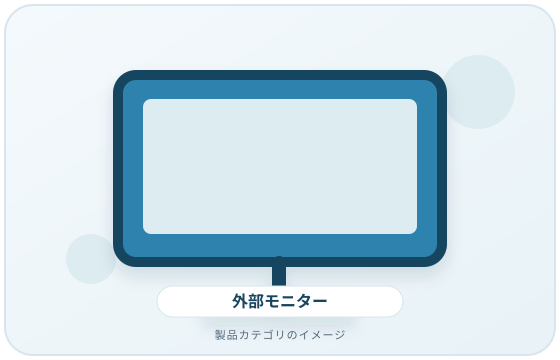
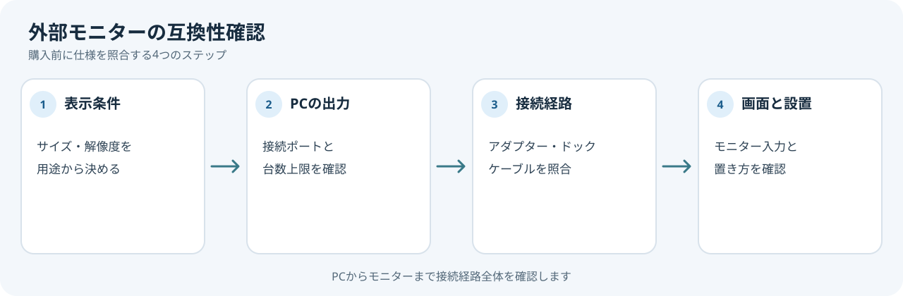

モニターのサイズや解像度だけで選ぶと、PC側の接続条件と合わないことがあります。PC、変換アダプターやドック、ケーブル、モニターの組み合わせを先に確認しましょう。
画像・ボタンはAmazonアソシエイトリンクです。適格購入により紹介料を得る場合があります。

Amazon.co.jpで「PC モニター」を探す ↗

1. 画面サイズと解像度を用途に合わせる
Microsoftは、画面サイズと解像度をディスプレイ選択時の要素として挙げ、解像度は画面上のピクセル数と説明しています。大きい画面では一度に多くのウィンドウを表示できる一方、設置場所も必要です。机の幅、視聴距離、同時に表示したい情報を考えて候補を絞ります。
2. PCの出力とモニターの入力を合わせる
PCの仕様表で、利用する映像出力端子と対応する映像機能を確認します。USB-C経由ならUSB-C端子があるだけでなく、必要な映像出力に対応するかを確認してください。モニター側の入力端子とケーブルの種類も照合します。
3. 必要な表示条件を確認する
解像度、リフレッシュレート、HDRなど、使いたい表示条件をPC・ケーブル・アダプター・モニター各社の仕様で確認します。複数モニターを使う場合、PCのグラフィックス機能が接続台数を制限することがあります。
4. 設置と調整方法を確認する
机上の幅と奥行き、スタンドの占有範囲、画面の高さ調整の可否、壁掛けやモニターアームを使う場合の取付条件を確認します。仕様にない取付互換性は推測しないでください。
購入前の確認メモ
- 用途に必要な画面サイズ・解像度・表示条件
- PCの映像出力ポートと接続できる画面数
- アダプター・ドック・ケーブルの接続順
- モニター側の入力端子と設置スペース
PCからモニターまでの経路を順に書き出すと、変換機器やケーブルの見落としを減らせます。どこか一箇所でも条件が不明なら、型番を控えてメーカー資料を確認してください。
購入を保留するケース
PCの型番や映像出力仕様が不明、希望する表示条件が接続経路全体で確認できない場合は、PCメーカーまたはモニターメーカーに問い合わせてから選びましょう。この記事は特定モニターの比較や画質評価ではありません。
出典
- デバイスの画面とディスプレイに関するすべて — Microsoft Support（確認日: 2026-10-07）
- Windows での外部モニター接続のトラブルシューティング — Microsoft Support（確認日: 2026-10-07）